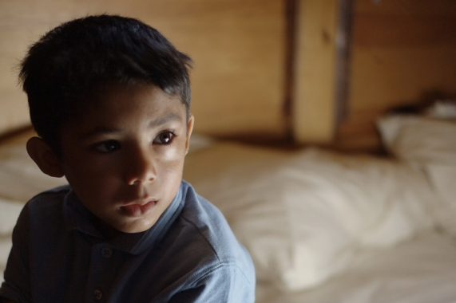

Family
For this page the topic is family, the reason why I choose family as a topic for being grateful is because in my opinion i think we should all be thankful for having a family since not all of us have the priviledge to have one.
Facts
Not every foster child finds a family. The forgotten ones grow up alone in the faceless embrace of bureaucracy, waiting and wishing, like runts in a litter of kittens staring hopelessly out of an emptying box. Elijah Callender was one of those children. The state covered his eyes and clutched him tightly until his 21st birthday. Then it dropped him.
Many of America’s child welfare systems are badly broken — and children can suffer serious harm as a result. Some will be separated from their siblings. Others will be bounced from one foster care placement to another, never knowing when their lives will be uprooted next. Too many will be further abused in systems that are supposed to protect them. And instead of being safely reunified with their families — or moved quickly into adoptive homes — many will languish for years in foster homes or institutions..